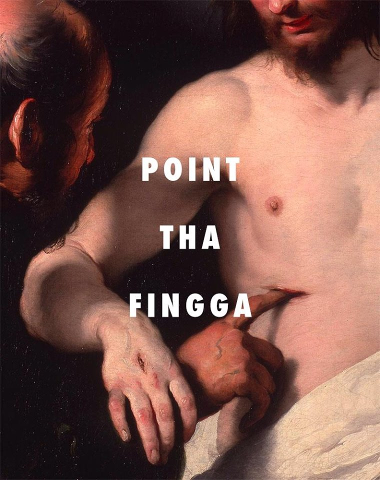

Alex Rosales
Elaborating on My Passions
Music
Dance
Photography

The arts as a whole- whether visual and performing have always been central to my life. I see the arts a pretty vital form of therapy. It allows me to express myself in multiple media.
Whether it is through words, a melody, shadows and value in a sketch or the subjects in photographs, art has allowed me insight to myself and the world around me.